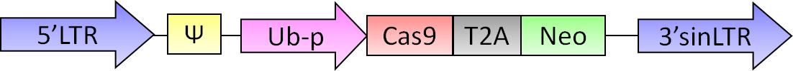
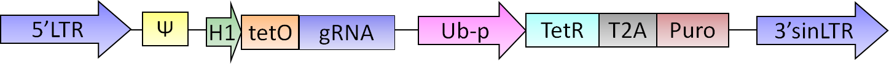

What is iKRUNC?
iKRUNC stands for inducible Knockouts by RNA Utilizing Cas9.
It is a lentiviral based system to create cell lines that upon Doxycycline induction expresses a custom hybrid sgRNA (single-guide RNA) which together with a constitutively expressed Cas9 protein will mediate double-strand DNA cleavage of any gene of interest.
Specificity of the system comes from a 20nt region in the sgRNA molecule that recognizes a complementary sequence in the genome
Vectors
The system consists of two vectors (Click on vector names to download a map):
The iKRUNC-Cas9Neo vector encodes the Cas9 protein and a neomycin selection cassette, making infected cells resistant to G418.

iKRUNC-sgRNA-BSD/iKRUNC-sgRNA-Puro vectors contain a doxycycline inducible H1 promoter driving any sgRNA of interest. The tet repressor and antibiotic selection markers (vectors are available with Blasticidin or Puromycin resistance genes) are expressed from the same construct

Cloning
To create a custom iKRUNC vector that inducibly cuts the genome of the host cell at any given location, a 20nt fragment containing the target site should be cloned into iKRUNC-sgRNA-BSD or iKRUNC-sgRNA-Puro (see protocols for further details).
Using the CRISPR/Cas9 system, not every genomic location can be cut, as the genomic recognition sequence has to be followed by NGG, the so-called protospacer adjacent motif (PAM).
Of course it is important to choose a target site that is uniquely present in the genome, but considering off-target effects, it is important to realize that cleavage of targets with only a few basepairs has been consistently reported.
To prevent such off-target effects, this website offers a sitefinder that can help in finding the ideal sgRNA sequences for your gene of interest.
Questions
In case you have any further questions, please send them to b.evers@nki.nl or leave a message on the forum